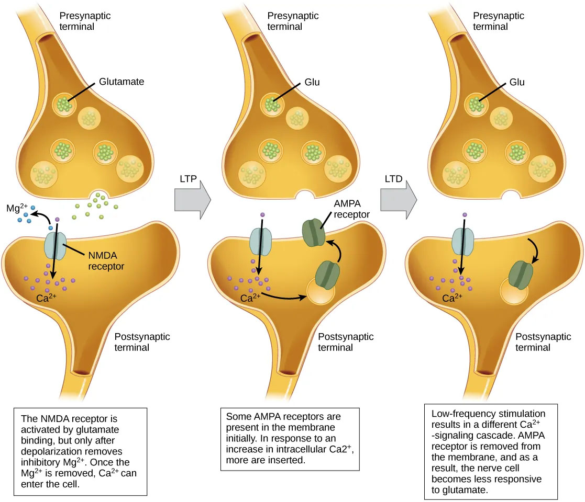

7.4: Neuroplasticity
Anytime you learn something new, the structure of your brain physically changes. The brain’s ability to reorganize or “rewire” its connections in response to intrinsic or extrinsic experiences is called neuroplasticity.
Learning depends on the plasticity of the circuits in the brain and the ability to make lasting changes in synaptic transmission (Clark et al., 2018; “The Brain from Top to Bottom”, n.d.). The brain can thus store information in networks of modified synapses, the arrangement of which constitutes the information. By activating these synaptic networks, the brain is able to retrieve the stored information.
Our understanding of the rules that govern the networking of neurons goes back to the groundbreaking work by Donald Hebb over 70 years ago. Hebb proposed that if two neurons are active at the same time, the synapses between them are strengthened—this is captured in the famous phrase “Neurons that fire together, wire together.” Inspired by this hypothesis, researchers discovered long-term potentiation (LTP) in the early 1970s, providing the first supporting mechanism.
Long-term potentiation (LTP) is a persistent strengthening of a synaptic connection (Clark et al., 2018). LTP is based on the Hebbian principle: cells that fire together wire together. While not fully understood, one key mechanism of synaptic strengthening involves postsynaptic glutamate receptors called NMDA receptors (Figure 4). These receptors, normally blocked by magnesium ions, open when rapid successive presynaptic inputs depolarize the postsynaptic neuron. This allows calcium (Ca2+) ions to enter the cell, triggering a signaling cascade that causes AMPA receptors to migrate from within the postsynaptic cell and insert into the postsynaptic membrane. These newly available AMPA receptors allow positive ions to enter the cell. So the next time glutamate is released from the presynaptic neuron, it will have a larger excitatory effect (EPSP) because glutamate binding to AMPA receptors will allow more positive ions into the cell. In sum, after being activated simultaneously, the increased presence of AMPA receptors strengthens the synapse and makes the postsynaptic neuron more likely to fire in response to presynaptic neurotransmitter release. Some drugs of abuse co-opt the LTP pathway, and this synaptic strengthening can lead to addiction.
In addition to LTP strengthening synaptic connections, neuroplasticity also requires weakening some connections. One well-studied process underlying the weakening of synaptic connections is Long-Term Depression (LTD). Long-term depression is essentially the reverse of LTP. Similar to long-term potentiation, long-term depression also involves AMPA receptors. In this situation, calcium that enters through NMDA receptors initiates a different signaling cascade, which results in the removal of AMPA receptors from the postsynaptic membrane (Figure 4). Fewer AMPA receptors in the membrane make the postsynaptic neuron less responsive to glutamate released from the presynaptic neuron. While it may seem counterintuitive, LTD may be just as important as LTP for learning and memory. The weakening and pruning of unused synapses allows for unimportant connections to be lost and makes the synapses that have undergone LTP much stronger by comparison.

Even today, Hebb’s rule, as it is often known, remains one of the primary factors for predicting which synapses will be strengthened in a network of neurons. More recent research has uncovered other characteristics of the networking of groups of neurons. For example, the LTP that leads to synaptic strengthening is very specific to neurons that are activated simultaneously, and only to such neurons.
Text Attributions
This section contains material adapted from:
Clark, M. A., Douglas, M., & Choi, J. (2018). 35.2 How Neurons Communicate. In Biology 2e. OpenStax. Access for free at https://openstax.org/books/biology-2e/pages/35-2-how-neurons-communicate License: CC BY 4.0 DEED.
Duboc, B. (2002). The Brain From Top To Bottom: Memory and the Brain: Plasticity in Neural Networks. Access for free at https://thebrain.mcgill.ca/ License: CC (Copyleft).
A persistent strengthening of synaptic connections based on recent patterns of activity. A mechanism underlying “neurons that fire together, wire together.”
A long lasting decrease in the strength of synaptic connection based on recent patterns of activity.